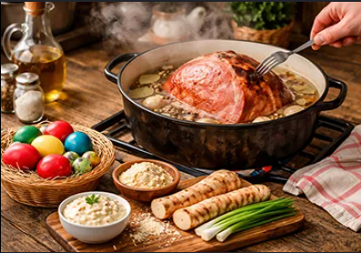

Kuharski recepti |
Domov Recepti Kategorije Dodaj recept | Prijava Registracija |
| Kategorije Juhe Glavne jedi Sladice Solate Več | ||
| Recepti Moji recepti Dodaj recept Shranjeni recepti | ||
Na spletni strani Kuharski recepti lahko najdeš različne recepte, jih razvrstiš po kategorijah in si shraniš najljubše jedi. Uporabniki lahko dodajo tudi svoje recepte in jih delijo z drugimi. |
 |
|
Osnovni recepti |
||